slayer

slayer is a ray tracer written in Go. it follows light backwards from a camera through a scene, develops that light like film, and writes pictures and films. on a Mac it can trace on the GPU through Metal.
the picture above is from the orbital scene. everything on this page was drawn by slayer at the 2k size (2048 by 1152), except the Ferruccio screenshots, the Grissom pictures, the small frames in step 7 and the two films. the source is github.com/janearc/slayer.
from the README, in the author's words:
this is my third attempt at a ray tracing/rendering kit. it is my first with metal support, and it has the most ambitious efforts at math and physics. i use this software constantly, but i do not consider it "released" yet and i plan to change a lot about it.
if you'd like help with using it or you have questions or patches, let me know. please expect that this will change substantially for a little while.
12 november 2026: slayer is getting a little more robust and less difficult to use but it is still very complicated and not friendly. if you cna't figure it out today, that's okay, it will get better. but if you're not pretty skilled at golang, this is probably not the place to start your tracing journey.
README.md, "pre-released"

a Venera lander on the plains of Venus.
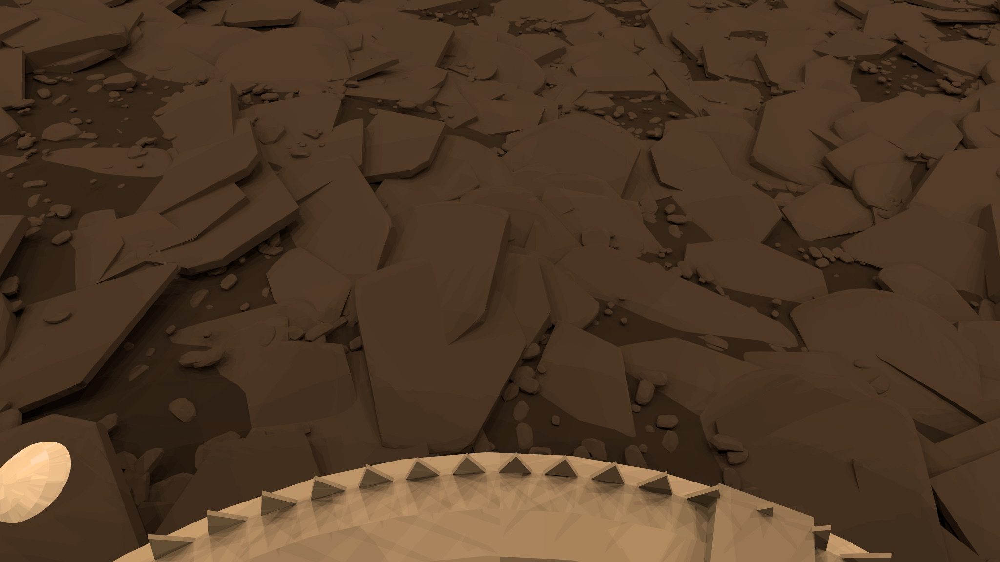
the same lander, looking down past its landing ring at the slabs.
contents:
- what you need
- get it and build it
- Ferruccio, the friendly way in
- the front door
- your first picture and film
- a scene in YAML, step by step
- a scene in Go
- Grissom
- where to go next
what you need
- macOS with a Metal device for the GPU renderer,
plus Git and the Xcode command-line tools
(
xcode-select --install). the CPU renderer works without Metal. - Go 1.27.3, the version named in
go.mod. - Game, the project runner slayer builds with: github.com/janearc/game,
v0.5.0 or newer. it reads the checkout's
.gamefile for build steps, named runs and checks. - ffmpeg on your PATH, for films made from jobs. pictures don't need it.
- the source shelf: a folder of your own that holds the datasets slayer's scenes are built from. the next section fetches it.
today's state. building from a fresh clone of the current development line also needs two dependencies published first.
go.modpointsgithub.com/janearc/celestial-dataandgithub.com/scigolib/netcdfat folders on the development machine until celestial-data's netcdf adapter and the netcdf fix are published; until then a fresh clone elsewhere stops atgo.mod.
doc/building.md says the same and will say when it changes.
check your tools:
command -v game
game --age
go versionsome installations name the Game executable game5; use
that name wherever this page says game.
get it and build it
git clone https://github.com/janearc/slayer.git
cd slayer
export GOWORK=offGOWORK=off keeps an enclosing Go workspace from quietly
supplying different modules. every command from here on runs from the
checkout root.
the shelf
the shelf holds the papers and datasets pinned in
sources.yaml. a release doesn't include it, so name a
folder of your own, outside any Git checkout, and set it in your
shell:
export SLAYER_SHELF="$HOME/slayer/sources"
game run sources-fetch
game run sources-check
game run sources-verifythe fetch is about 2 GB, most of it one elevation model of Kilauea, and keeps what it already has if you run it again. check holds the bytes to their hashes; verify also checks the source pages behind published values.
put the export line in your shell's startup file so
later builds find the shelf. setting it in Game's config instead doesn't
reach these runs today; the shell does.
build
game build
bin/slayer --agegame build checks the shelf first, then builds stamped
commands into bin/. --age says which build you
have and where it came from. rebuild after you change Go code.
Ferruccio, the friendly way in
Ferruccio is a native workspace for writing slayer scenes. it opens a
scene's YAML, shows the picture beside the source, lets you move, turn
and look at things in the scene, and draws a real still through slayer.
it's a separate Go module inside the checkout,
ferruccio/native, with a GoGPU window on Metal.
build it
the plain root build doesn't build Ferruccio, and the two need different cgo settings: slayer needs cgo, Ferruccio's macOS bridge is pure Go and needs it off.
export GOWORK=off
CGO_ENABLED=1 game build
cd ferruccio/native
CGO_ENABLED=0 game build
cd ../..that gives you bin/slayer and
ferruccio/native/bin/ferruccio.
open it
ferruccio has three verbs: open,
proof and regress. with nothing after it, at a
terminal, it is open. the preview runs your slayer through
Game, so tell it where both are, and give it a folder that already
exists for the previews it draws:
mkdir -p "$HOME/ferruccio-previews"
ferruccio/native/bin/ferruccio open --dry-run
ferruccio/native/bin/ferruccio open \
--slayer "$PWD/bin/slayer" \
--game "$(command -v game)" \
--game-home "$GAME_HOME" \
--evidence "$HOME/ferruccio-previews" \
--examples ferruccio/examples \
sets/ferruccio-playground.yaml--dry-run opens nothing; the second command opens the
window and takes focus. --game-home is your Game
configuration home, if you use one.
sets/ferruccio-playground.yaml is a known good scene and
reads no datasets; for scenes that do, add
--shelf "$SLAYER_SHELF".
in the window: Move, Turn and Look modes (M,
T, L), two trackballs (Orbit and Travel),
Render fully, Preview, Source, Undo and Redo, a display selector
(Wireframe, Solid, Edges, Rendered), a theme selector, and type from 16
to 24 points. Play gives the picture the window, Observe puts the YAML
beside it, and Compose enlarges it.

Play: the Larson ship and a two-metre visitor, rendered, with the Orbit and Travel trackballs.

Observe: the same scene with its YAML beside the picture and the scene list on the left.

Play in Wireframe: the live working geometry.
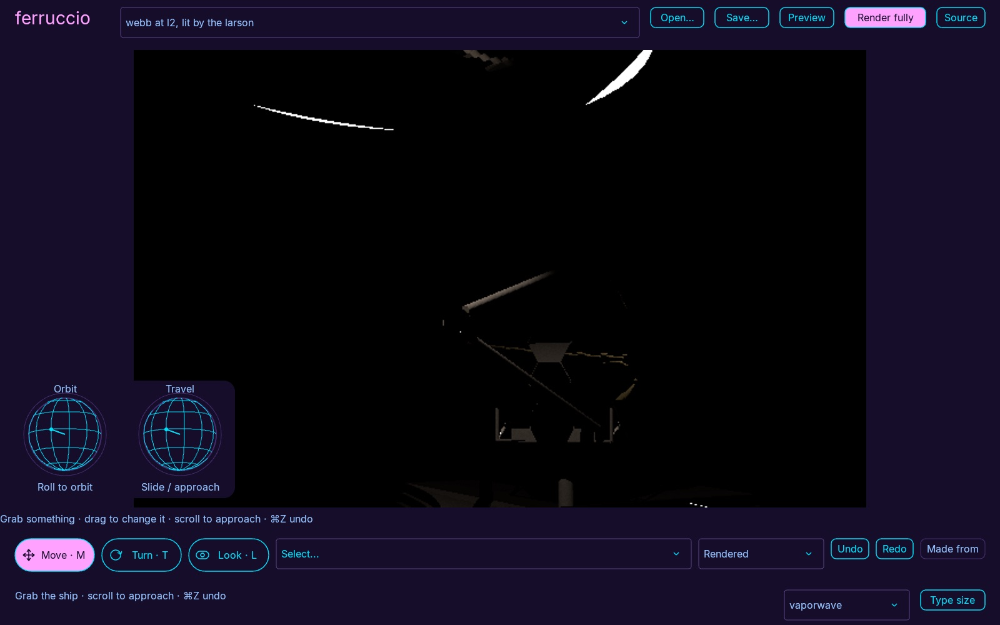
Play with the webb-at-l2 scene.
proof
proof draws the workspace without showing a window and
exports it as a 1600 by 1000 PNG. the pictures above were made that
way:
ferruccio/native/bin/ferruccio proof --background \
--slayer "$PWD/bin/slayer" --game "$(command -v game)" \
--game-home "$GAME_HOME" --evidence "$HOME/ferruccio-previews" \
--file sets/ferruccio-playground.yaml --render \
--composition play --out play.pngchange --composition to observe or
compose, or drop --render and pass
--display wire for the wireframe.
the front door
slayer is one command with verbs. run it as
bin/slayer VERB, or through Game as
game run slayer -- VERB; the words after -- go
to slayer.
drawcarries out a job and writes what it asks: a picture, frames, a film with its sound.listsays what there is to draw and to draw with: scenes, smokes, presets, stocks, tunes, voicings.assesssays whether a file will draw, drawing nothing, or judges a set or the smokes.developturns raw light already drawn into pictures through a job's print or stock.tunesserves a tune library's audition page, or checks, films or pages its tunes.cachesays what the disk caches hold, or empties them.watchdraws a job live in the terminal as you edit it.editlays out watch, your editor and the agent console in tmux.schemaprints the job schema, or where its copy is.
bin/slayer --help
bin/slayer --agent-help
bin/slayer draw --help
bin/slayer list presets--agent-help gives the same verb map, written for a
coding agent. each verb's own --help lists its arguments
and flags. slayer with nothing after it, at a terminal, is
slayer edit.
there is also slayer render FILE, which draws a whole
set file; the YAML walkthrough below uses it.
your first picture and film
slayer has two kinds of YAML. a set describes the
world: ground, things, lights, sky. a job describes the
photograph or film: which scene, the camera, the size and rays, the
time, the sound, and what comes out. the checkout comes with a first
job, jobs/first-picture.yaml:
jobs/first-picture.yaml
$schema: https://github.com/janearc/slayer/schemas/job-v1.json
scene: {smoke: 1}
renderer: cpu
film: {width: 160, height: 90, rays: 1}
at: {value: 0, unit: s}
outputs:
picture: ../out/first-picture.png
raw: ../out/first-picture.pfmit draws smoke 1, one of slayer's small numbered test scenes, at 160 by 90 on the CPU. it needs no Metal and no terrain. check it, look at what it would do, then draw it:
game run slayer -- assess jobs/first-picture.yaml
game run slayer -- draw jobs/first-picture.yaml --dry-run
game run slayer -- draw jobs/first-picture.yamlassess checks the input without drawing. the dry run prints the job
in its full form and every file it would write. the draw writes
out/first-picture.png and
out/first-picture.pfm. output paths in a job are relative
to the job file, not to your terminal.
try it bigger, with more rays:
game run slayer -- draw jobs/first-picture.yaml --width 320 --height 180 --rays 2rays are counted per side: 2 means four rays a pixel, 4 means sixteen. going from 2 to 4 is roughly four times the work. more rays help edges and noise; they can't fix a camera pointed the wrong way.
the .pfm holds the linear light before development.
change the job's print settings and develop it again without
tracing:
game run slayer -- develop jobs/first-picture.yaml out/first-picture.pfmfirst film
jobs/first-film.yaml
$schema: https://github.com/janearc/slayer/schemas/job-v1.json
scene: {smoke: 1}
renderer: cpu
film: {width: 160, height: 90, rays: 1}
fps: 6
duration: {value: 3, unit: s}
sound:
tune: ../cheeptune/examples/sunrun.json
voicing: "@leap-dmg"
outputs:
frames: ../out/first-film
movie: ../out/first-film.mp4three seconds at six frames a second, with a score played on slayer's
own synth, cheeptune. the scene holds still; this one
checks frames, sound and encoding. it needs ffmpeg.
game run slayer -- draw jobs/first-film.yaml --dry-run
game run slayer -- draw jobs/first-film.yamlit writes out/first-film.mp4 and numbered PNGs in
out/first-film/. control-c stops between frames; running
the same job again on the same build resumes where it stopped.
a scene in YAML, step by step
seven steps, from bare ground to a short camera move over a real
crater. the ground is the US Geological Survey's 2019 lidar elevation
model of Kilauea Iki, the large dataset on the shelf. each set names the
file it reads, unpacked/kil_2019dem/kil_2019dem.tif under
the shelf. the trees and stones are grown by slayer's manufactory from a
seed. no image files go in.
put the sets inside the checkout, for example in
sets/guide/: slayer looks for sources.yaml
from the YAML's own folder upward. every step is a whole file you can
render on its own.
step 1: ground and sky
sets/guide/step-1.yaml
scene:
name: step 1, ground and sky
light: sun
terrain:
from: usgs-kilauea-2019-dem
file: unpacked/kil_2019dem/kil_2019dem.tif
west: 263000
north: 2149000
across: 1800
down: 1300
step: 4
film:
width: 2048
height: 1152
rays: 2
cameras:
across:
orientation:
point_to: the far stone
alpha: -4
location:
loc_relative:
object: the lookout
standoff_x: 0
standoff_y: 0
standoff_z: 3
set:
things:
the lookout:
kind: cobble
seed: 5
east: 263850
north: 2148720
the far stone:
kind: cobble
seed: 6
east: 264450
north: 2148100bin/slayer render sets/guide/step-1.yaml -out out/step-1.png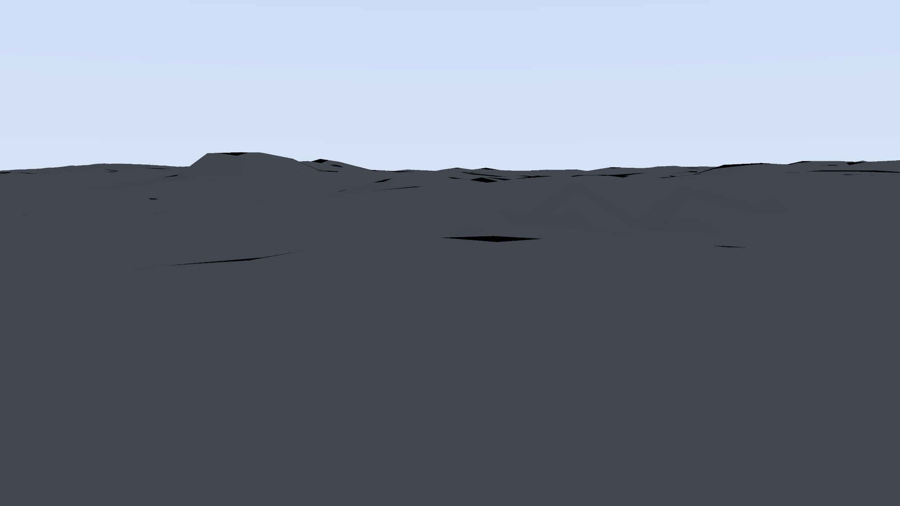
step 1. the ground and the default sky.
the smallest set that draws. terrain cuts a window 1800
by 1300 metres out of the elevation model, sampled every 4 metres. a set
with no terrain is refused, so ground and sky come together.
a camera in a set stands off a named thing and points at a named
thing, so two plain stones (cobble) are here as its marks:
it stands 3 m above the lookout and looks toward
the far stone, 4 degrees below level. rays: 2
is four rays a pixel.
step 2: the sky from earth's air
added under scene:
air: earth
location:
lat: 19.4165
lon: -155.2485
timeofday: 1200
sun:
azimuth: 160
altitude: 60bin/slayer render sets/guide/step-2.yaml -out out/step-2.png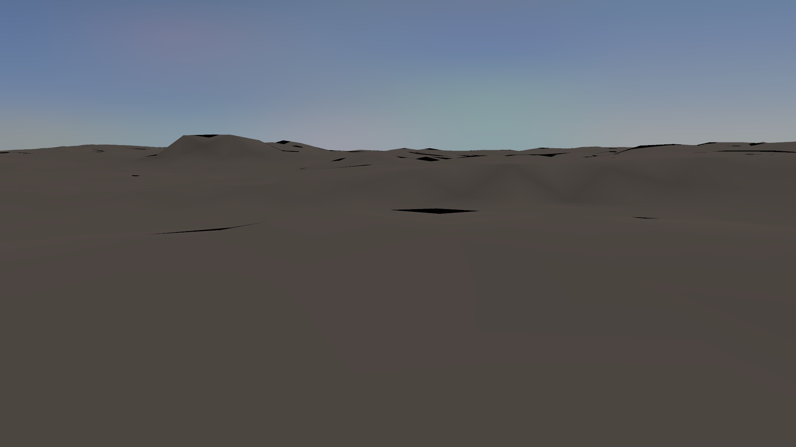
step 2. a noon sun, high in the south-south-east.
air: earth works the sky out from the standard
atmosphere, the sun's place and where you stand on the earth, instead of
painting it. the exposure is metered from that light, so the set doesn't
say one. the ground reads dim because the meter puts a noon scene at mid
grey. air needs light: sun.
step 3: one made thing
added under set: things:
the tree:
kind: spruce
seed: 3
east: 263920
north: 2148690
stands_in_for: "ohia lehua, until the manufactory grows it"bin/slayer render sets/guide/step-3.yaml -out out/step-3.pngstep 3. a spruce, about 70 m off, at the left edge.
the manufactory grows the tree from its seed; the set only says
where, in the elevation model's metres. stands_in_for is
free text kept with the thing. the tree is small here on purpose; step 5
moves the camera to it.
step 4: late afternoon
changed under scene:
timeofday: 1630
sun:
azimuth: 250
altitude: 14bin/slayer render sets/guide/step-4.yaml -out out/step-4.png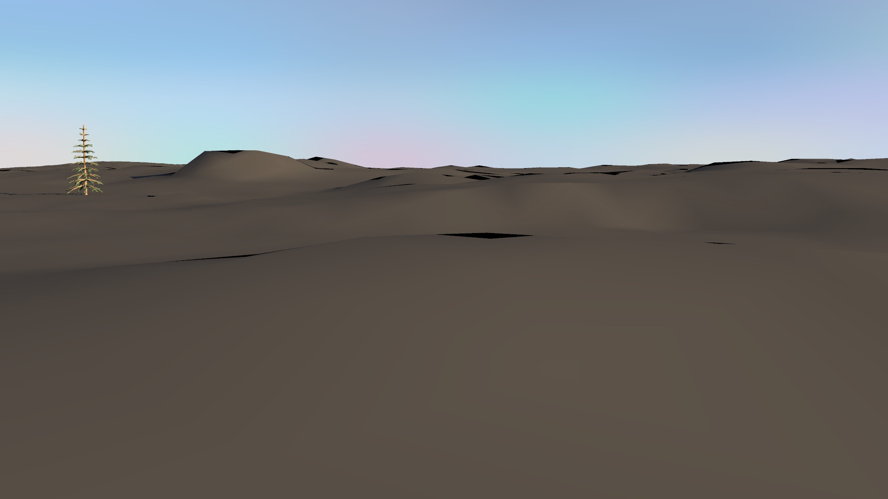
step 4. the sun low in the west-south-west.
the sun is 250 degrees clockwise from north and 14 degrees up, behind
and to the right of the camera, so shadows run long to the left and the
sky warms. the meter follows. it's the two sun numbers that
do this: timeofday is read and kept, and nothing in this
build uses it yet.
step 5: the camera placed with intent
the cameras block, replaced:
cameras:
past the tree:
orientation:
point_to: the far stone
alpha: -4
location:
loc_relative:
object: the tree
standoff_x: -30
standoff_y: 19
standoff_z: 2.5bin/slayer render sets/guide/step-5.yaml -out out/step-5.png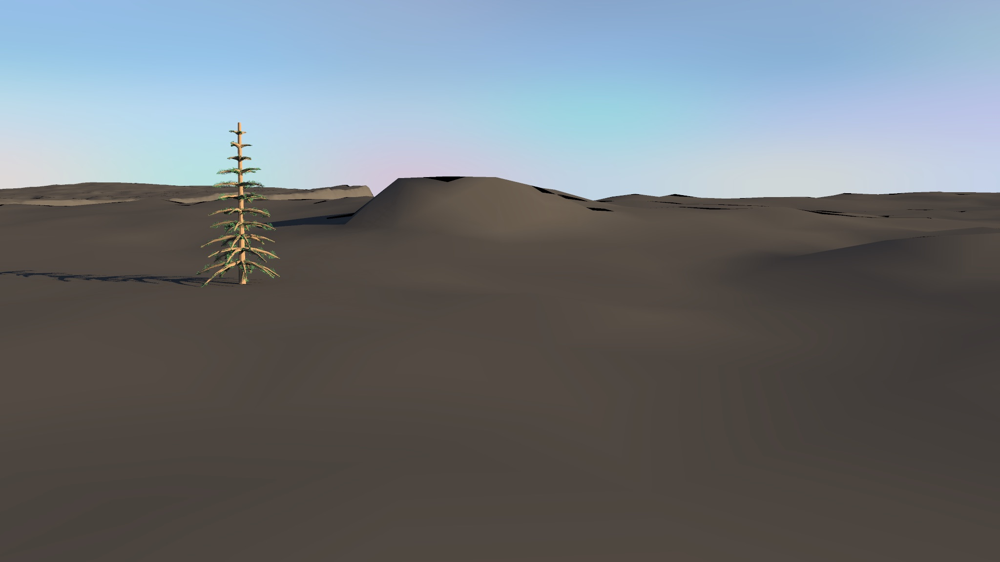
step 5. the tree left of centre, the crater beyond.
only the cameras block changes. the camera now stands off the tree:
standoff_x is metres east of it, standoff_y
metres north, standoff_z metres up, so 30 m west, 19 m
north and 2.5 m up. it still points at the far stone.
alpha is degrees up from level, not from the line to the
target. expect to try a placement, look, and adjust; these numbers took
two goes.
step 6: a stand of trees
added under set:
stands:
trees on the rim:
kind: spruce
count: 160
seed: 11
above: 1150
stands_in_for: "ohia lehua, until the manufactory grows it"bin/slayer render sets/guide/step-6.yaml -out out/step-6.png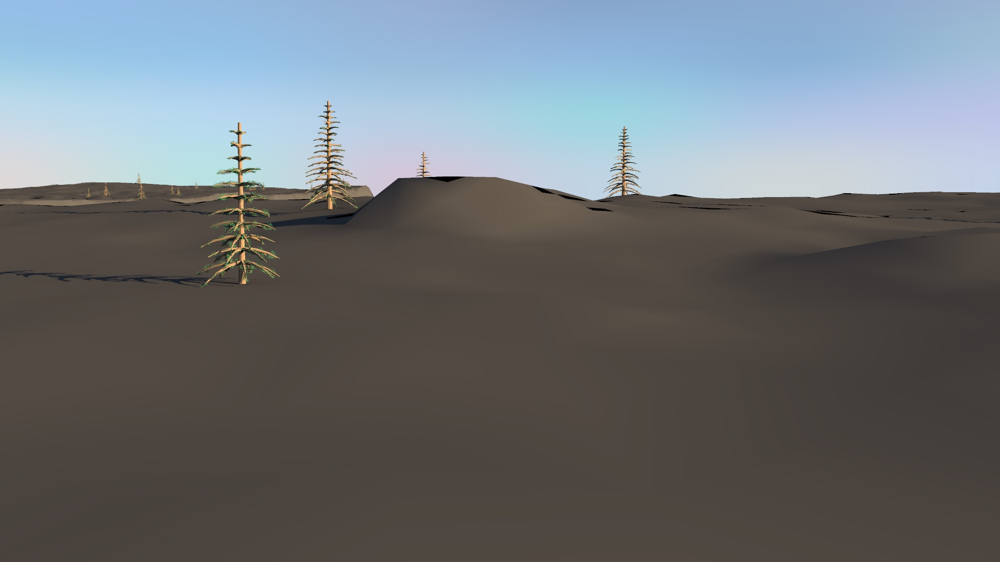
step 6. 160 spruces on the rim; most stand outside this frame.
a stand is many of one kind, grown on the ground from one seed: here 160 spruces wherever the ground is above 1150 m. the single tree stays and the stand grows round it. a few show on the horizon here; step 7 rises to see more.
step 7: a short camera move
this one is a job, not a set. it names the step 6 set, sizes the frames, and gives the camera a path.
sets/guide/step-7.yaml
$schema: https://github.com/janearc/slayer/schemas/job-v1.json
scene: {set: step-6.yaml}
film: {preset: 320, rays: 1}
fps: 4
duration: {value: 2, unit: s}
camera:
unit: m
look-at: {x: 1450, y: 15, z: 900}
moves:
- from: {x: 890, y: 131, z: 291}
to: {x: 890, y: 146, z: 291}
duration: {value: 2, unit: s}
ease: smooth
outputs:
frames: step-7-framesthe set's path is relative to the job. fps: 4 over 2
seconds is eight frames at the 320 preset, 320 by 180. the
camera looks at one fixed point on the crater floor and rises 15 m in
two seconds; ease: smooth starts and stops it gently.
points in a camera path are x east, y up and z south, in metres from the terrain window's north-west corner, with y measured from the window's lowest ground. there's no verb yet that prints the ground's height at a spot, so find a starting height by drawing a test frame and looking. 131 m came from doing that.
the same move as one 2k still, drawn 1.5 seconds in:
sets/guide/step-7-still.yaml
$schema: https://github.com/janearc/slayer/schemas/job-v1.json
scene: {set: step-6.yaml}
film: {preset: 2k, rays: 2}
at: {value: 1.5, unit: s}
camera:
unit: m
look-at: {x: 1450, y: 15, z: 900}
moves:
- from: {x: 890, y: 131, z: 291}
to: {x: 890, y: 146, z: 291}
duration: {value: 2, unit: s}
ease: smooth
outputs:
picture: step-7-2k.pngbin/slayer draw sets/guide/step-7.yaml
bin/slayer draw sets/guide/step-7-still.yamlthe frames land in sets/guide/step-7-frames/ and the
still in sets/guide/step-7-2k.png, beside the jobs. to draw
frames again that slayer already holds, add --fresh.
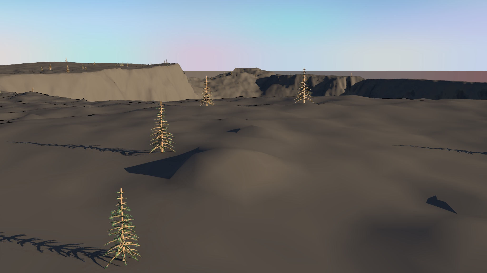
step 7 at 2k: from the rim of Kilauea Iki, 1.5 seconds into the move.
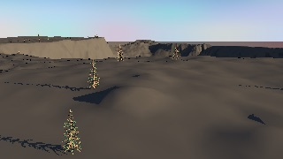
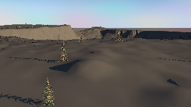
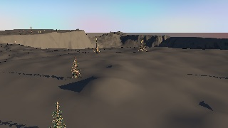
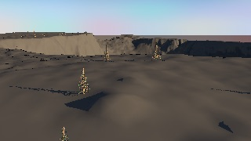
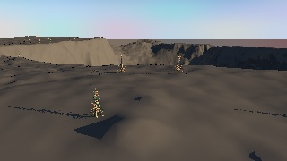
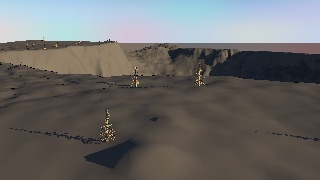
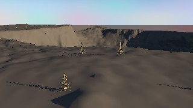
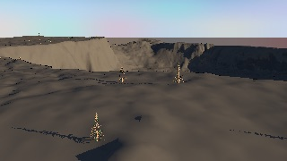
the eight frames of step 7 at 320 by 180, left to right, top to bottom. the 2k still is frame 7.
a scene in Go
YAML says where things are. Go lets a rule say it: positions, sizes,
colours and motion from a loop, so 12 balls and 377 balls are the same
length of code. this example is five small programs, step1
to step5, each a whole package main in its own
folder of one module. it reads no data files and needs no shelf.
layout:
example/
go.mod module example.com/slayer-guide
step1/main.go
step2/main.go
step3/main.go
step4/main.go
step5/main.gothe module needs slayer itself. there isn't a published slayer
version that builds as a library yet, so point at your clone with a
replace line, as this example did:
go.mod
module example.com/slayer-guide
go 1.27.3
require github.com/janearc/slayer v0.0.0
replace github.com/janearc/slayer => ../slayerthen, from example/:
export GOWORK=off
go mod tidy
go build -o bin/ ./...
bin/step1 -out step1-2k.pngthis was built against a local clone with Go's module cache already warm; a fresh machine with an empty cache hasn't been tried yet.
every step takes -out, -width,
-height and -rays (rays a side; the default 4
is sixteen a pixel). the size defaults to 2048 by 1152, what slayer
calls 2k. one unit is one metre, y is up, and the camera looks down
negative z.
step 1: a ball on a floor
step1/main.go: build and render
// build makes the world: a floor, a ball, a sun, a fill and a sky.
func build() *thing.World {
world := thing.NewWorld()
world.Add(thing.Thing{
Shape: shape.Plane{},
Material: thing.Diffuse("floor", maths.Grey(0.6)),
Motion: thing.Still(maths.Local()),
})
world.Add(thing.Thing{
Shape: shape.Sphere{Radius: ballRadius},
Material: thing.Diffuse("ball", maths.RGB(0.8, 0.25, 0.2)),
Motion: thing.Still(maths.Subspace{
Origin: maths.V(0, ballRadius, 0)}),
})
world.Lamp(thing.Sun(toSun.Unit(), maths.Grey(sunStrength)))
world.Lamp(film.Flood{Strength: maths.Grey(fillStrength)})
world.Sky = sky.Gradient{
Horizon: maths.RGB(0.7, 0.8, 0.95),
Zenith: maths.RGB(0.25, 0.4, 0.8),
Ground: maths.Grey(0.3),
}
return world
}
// render traces the world once and develops it into a picture.
func render(world *thing.World, width, height, rays int, cpu bool,
at time.Duration) (*image.RGBA, error) {
lens, err := film.PinholeOf(lensDegrees * maths.Degree)
if err != nil {
return nil, err
}
place := maths.Subspace{Origin: eye,
Orientation: maths.LookAt(eye, target)}
draw := gpu.Sampled
if cpu {
draw = trace.Sampled
}
light, err := draw(world, place, *lens, at, width, height, rays)
if err != nil {
return nil, err
}
tone := colour.Tone{Exposure: exposure, Knee: knee, Top: top}
return tone.Develop(light), nil
}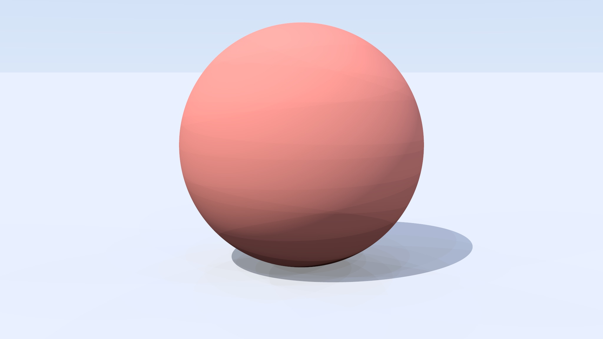
step 1. one ball, one floor, a sun and a fill light.
the smallest working scene, so every later step is a small edit to
it. a thing is a shape, a material and a motion;
thing.Still is a motion that doesn't move.
gpu.Sampled traces on Metal, trace.Sampled on
the CPU, and colour.Tone develops the linear light into a
picture.
the whole file: step1/main.go
// Command step1 draws one ball on a floor: the smallest scene built in Go.
//
// It is the first of four stills (step1 to step4) and a film (step5). Each
// is a whole program; diff one against the next to see what a step adds.
package main
import (
"flag"
"fmt"
"image"
"os"
"time"
"github.com/janearc/slayer/film"
"github.com/janearc/slayer/gpu"
"github.com/janearc/slayer/interfaces/file"
"github.com/janearc/slayer/maths"
"github.com/janearc/slayer/render/colour"
"github.com/janearc/slayer/scene/shape"
"github.com/janearc/slayer/scene/sky"
"github.com/janearc/slayer/scene/thing"
"github.com/janearc/slayer/trace"
)
// The size slayer calls 2k: job/presets.yaml names it 2048 by 1152.
const (
defaultWidth = 2048 // pixels across, the "2k" preset
defaultHeight = 1152 // pixels down, the "2k" preset
defaultRays = 4 // rays per axis per pixel: 4 means 16 per pixel
)
// The scene's numbers. One unit is one metre; y is up.
const (
ballRadius = 1.0 // picked: a one metre ball
lensDegrees = 45.0 // picked: how much the pinhole sees across
sunStrength = 3.0 // picked: bright enough for white paint to read white
fillStrength = 0.35 // picked: fill, so shadows are not black
exposure = 1.0 // picked: the darkroom's multiplier
knee = 0.8 // picked: where highlights start to roll off
top = 8.0 // picked: the brightest light the picture holds
)
// eye and target are where the camera stands and what it looks at.
var (
eye = maths.V(0, 1.6, 6) // picked: a little above the ball, back
target = maths.V(0, 0.8, 0) // picked: the ball's middle
toSun = maths.V(-0.5, 1, 0.6) // picked: where the sun is, up and left
)
// build makes the world: a floor, a ball, a sun, a fill and a sky.
func build() *thing.World {
world := thing.NewWorld()
world.Add(thing.Thing{
Shape: shape.Plane{},
Material: thing.Diffuse("floor", maths.Grey(0.6)),
Motion: thing.Still(maths.Local()),
})
world.Add(thing.Thing{
Shape: shape.Sphere{Radius: ballRadius},
Material: thing.Diffuse("ball", maths.RGB(0.8, 0.25, 0.2)),
Motion: thing.Still(maths.Subspace{
Origin: maths.V(0, ballRadius, 0)}),
})
world.Lamp(thing.Sun(toSun.Unit(), maths.Grey(sunStrength)))
world.Lamp(film.Flood{Strength: maths.Grey(fillStrength)})
world.Sky = sky.Gradient{
Horizon: maths.RGB(0.7, 0.8, 0.95),
Zenith: maths.RGB(0.25, 0.4, 0.8),
Ground: maths.Grey(0.3),
}
return world
}
// render traces the world once and develops it into a picture.
func render(world *thing.World, width, height, rays int, cpu bool,
at time.Duration) (*image.RGBA, error) {
lens, err := film.PinholeOf(lensDegrees * maths.Degree)
if err != nil {
return nil, err
}
place := maths.Subspace{Origin: eye,
Orientation: maths.LookAt(eye, target)}
draw := gpu.Sampled
if cpu {
draw = trace.Sampled
}
light, err := draw(world, place, *lens, at, width, height, rays)
if err != nil {
return nil, err
}
tone := colour.Tone{Exposure: exposure, Knee: knee, Top: top}
return tone.Develop(light), nil
}
// main reads the flags, draws one frame and writes a PNG.
func main() {
out := flag.String("out", "step1.png", "PNG to write")
width := flag.Int("width", defaultWidth, "pixels across")
height := flag.Int("height", defaultHeight, "pixels down")
rays := flag.Int("rays", defaultRays, "rays per axis per pixel")
cpu := flag.Bool("cpu", false, "trace on the CPU, not the GPU")
flag.Parse()
started := time.Now()
picture, err := render(build(), *width, *height, *rays, *cpu, 0)
if err == nil {
err = file.PNG(*out, picture, 1)
}
if err != nil {
fmt.Fprintln(os.Stderr, "step1:", err)
os.Exit(1)
}
fmt.Printf("step1: %s in %s\n", *out, time.Since(started).Round(time.Millisecond))
}step 2: a ring, placed by a rule
step2/main.go: the one ball becomes ring(world, 12,
3.0)
// hue is a fully saturated colour for a fraction of the way round the
// colour wheel, from zero to one, scaled to a paint's reflectance.
func hue(fraction float64) maths.Light {
const paint = 0.75 // picked: no paint gives back all of its light
channel := func(shift float64) float64 {
wave := 0.5 + 0.5*math.Cos(turn*(fraction-shift))
return paint * (0.15 + 0.85*wave)
}
return maths.RGB(channel(0), channel(1.0/3), channel(2.0/3))
}
// ring adds count balls on a circle of the given radius, resting on the
// floor, each coloured by where it stands.
func ring(world *thing.World, count int, radius float64) {
for number := range count {
fraction := float64(number) / float64(count)
angle := turn * fraction
world.Add(thing.Thing{
Shape: shape.Sphere{Radius: ballRadius},
Material: thing.Diffuse(fmt.Sprintf("ball-%d", number), hue(fraction)),
Motion: thing.Still(maths.Subspace{Origin: maths.V(
radius*math.Cos(angle), ballRadius, radius*math.Sin(angle))}),
})
}
}bin/step2 -out step2-2k.png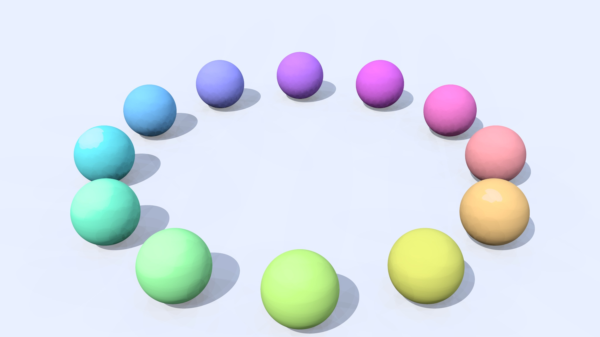
step 2. twelve balls, the colour following the angle.
ball n stands at angle 2πn/12 and takes hue(n/12), so
one number drives both where it stands and what colour it is. the rest
of the file is step 1's, with the camera raised to see the ring's shape
(eye = maths.V(0, 5.5, 8.5)) and the new numbers named as
constants.
step 3: a sunflower, by the golden angle, with a seed
step3/main.go: ring becomes sunflower(world, 377,
seed)
// goldenAngle is the angle that splits a turn in the golden ratio, about
// 137.5 degrees: the angle between neighbouring seeds in a sunflower.
var goldenAngle = math.Pi * (3 - math.Sqrt(5))
// seedAt is where ball number n stands on the floor plan: its distance
// from the middle and its angle round.
func seedAt(number int) (distance, angle float64) {
return spacing * math.Sqrt(float64(number)), goldenAngle * float64(number)
}
// sunflower adds count balls by the golden angle. The seed varies their
// sizes and colours and nothing else.
func sunflower(world *thing.World, count int, seed uint64) {
edge, _ := seedAt(count)
for number := range count {
distance, angle := seedAt(number)
size := spacing * fitness * (1 + scatter*(2*noise.Hash2(seed, int64(number), sizeStream)-1))
fraction := colourTurns * distance / edge
fraction += hueScatter * (2*noise.Hash2(seed, int64(number), hueStream) - 1)
lift := mound * math.Exp(-moundWidth*(distance/edge)*(distance/edge))
world.Add(thing.Thing{
Shape: shape.Sphere{Radius: size},
Material: thing.Diffuse(fmt.Sprintf("seed-%d", number), hue(fraction)),
Motion: thing.Still(maths.Subspace{Origin: maths.V(
distance*math.Cos(angle), size+lift, distance*math.Sin(angle))}),
})
}
}bin/step3 -out step3-2k.png -seed 11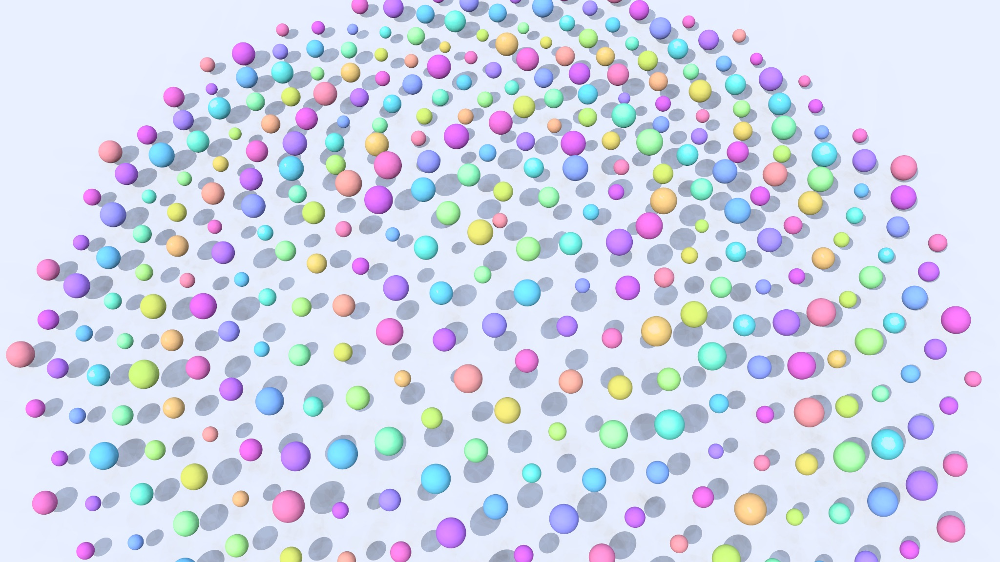
step 3. 377 balls, each turned 137.5 degrees from the last.
a rule too long to type by hand. ball n is 0.32×√n metres out, turned
n golden angles, and a Gaussian mound lifts the middle.
noise.Hash2 turns the seed and the ball's number into a
steady small change in size and colour: the same seed gives the same
flower, and -seed picks another one. the camera moves back
and up to take it all in.
step 4: motion from maths
step4/main.go: thing.Still gives way to a motion of our
own
// Ripple is a motion: a ball that rests at Rest and rises and falls as a
// wave runs outward from the vertical axis through Centre.
type Ripple struct {
Rest maths.Vec // where the ball stands when the wave is not there
Centre maths.Vec // where the wave starts from; only x and z are used
}
// At is the ball's place at elapsed time t. The wave's phase falls with
// distance from the centre, so crests travel outward.
func (r Ripple) At(t time.Duration) maths.Subspace {
across := math.Hypot(r.Rest.X-r.Centre.X, r.Rest.Z-r.Centre.Z)
phase := turn * (t.Seconds()/wavePeriod - across/waveLength)
rise := waveHeight * (1 + math.Sin(phase)) / 2
return maths.Subspace{Origin: r.Rest.Add(maths.V(0, rise, 0))}
}
// in sunflower, each ball now takes:
// Motion: Ripple{Rest: maths.V(distance*math.Cos(angle),
// size+lift, distance*math.Sin(angle))},bin/step4 -out step4-2k.png -at 0.4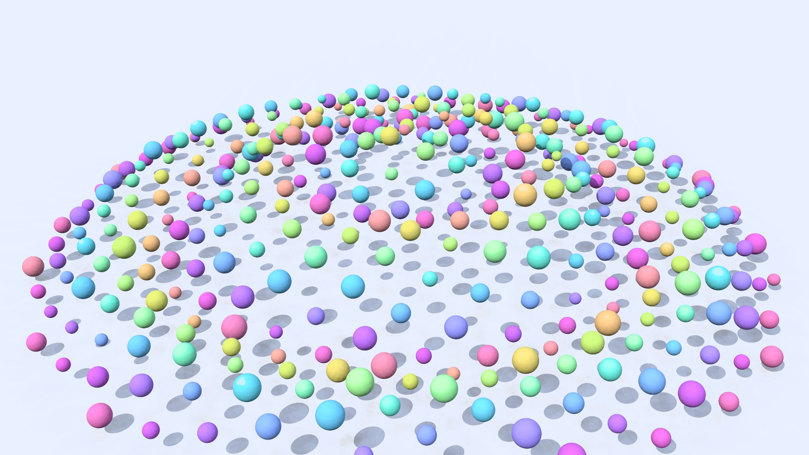
step 4. the wave at 0.4 seconds.
a motion is any value with an At(time) method that says
where a thing stands at that moment. slayer asks it once a frame, so one
world serves every instant, and -at picks the instant. in a
still the wave shows only as uneven heights; the film shows it
moving.
step 5: a film, with music
step 5 is step 4 with a loop over time. frame n is drawn at n/24
seconds, the camera goes a quarter turn round the flower by a rule of
time, and each developed frame goes straight to slayer's movie writer.
the soundtrack is a cheeptune score built into slayer.
there are no frame files and no ffmpeg here: the writer encodes through AVFoundation, so it works on macOS only. it wants an even width, a height that's a multiple of 16 (352 is 22 × 16), and 24 or 30 frames a second.
step5/main.go: the camera, the sound, the film
// eyeAt is where the camera stands at a moment: round the flower by a rule
// of time. It goes swing of a turn in the film's length and is a function
// of time alone, so any frame can be drawn without the ones before it.
func eyeAt(at time.Duration, length float64) maths.Vec {
angle := startAngle - turn*swing*at.Seconds()/length
return maths.V(eyeDistance*math.Cos(angle), eyeHeight,
eyeDistance*math.Sin(angle)+target.Z)
}
// soundtrack renders a score through a voicing and hands it to the movie
// writer's own type: stereo samples, left then right, interleaved.
func soundtrack(score, voicing string) (movie.Sound, error) {
piece, err := cheeptune.Open(score, voicing)
if err != nil {
return movie.Sound{}, err
}
mixed := make([]float32, 0, 2*len(piece.Left))
for at := range piece.Left {
mixed = append(mixed, piece.Left[at], piece.Right[at])
}
return movie.NewSound(piece.Rate, mixed)
}
// makeFilm draws every frame and writes them, with the sound, to a movie.
func makeFilm(path string, world *thing.World, length float64, rate int,
sound movie.Sound, cpu bool) error {
frames := int(math.Round(length * float64(rate)))
settings, err := movie.NewSettings(movie.Request{Path: path,
Width: filmWidth, Height: filmHeight, Rate: rate, Frames: frames,
Sound: sound, Replace: true})
if err != nil {
return err
}
writer, err := movie.New(context.Background(), settings)
if err != nil {
return err
}
for number := range frames {
at := time.Duration(float64(number) / float64(rate) * float64(time.Second))
picture, err := render(world, [2]int{filmWidth, filmHeight}, filmRays, cpu, at, length)
if err == nil {
err = writer.Frame(number, picture)
}
if err != nil {
writer.Abort()
return err
}
}
return writer.Close()
}bin/step5 -out step5-film.mp4
bin/step5 -still step5-2k.png -at 1.0step 5: three seconds, 72 frames at 640 by 352, with the
@leap score on the @leap-dmg voicing. the
sound starts when you press play. the picture links to the film, film.mp4; GitHub doesn't play video
from a page, so download it or open it directly.
step 5 as a 2k still, one second in.
the whole file: step5/main.go
// Command step5 makes the moving sunflower into a film with music.
//
// It is step4 with a loop over time. For each frame it asks the world for
// its instant (frame number over frames a second), moves the camera round
// by a rule of time as well, develops the frame, and hands it to the movie
// writer. A score rendered by cheeptune is the soundtrack. With -still it
// draws one frame, at -at seconds, to a PNG instead: the 2k picture.
package main
import (
"context"
"flag"
"fmt"
"image"
"math"
"os"
"time"
"github.com/janearc/slayer/cheeptune"
"github.com/janearc/slayer/film"
"github.com/janearc/slayer/gpu"
"github.com/janearc/slayer/interfaces/file"
"github.com/janearc/slayer/interfaces/movie"
"github.com/janearc/slayer/maths"
"github.com/janearc/slayer/maths/noise"
"github.com/janearc/slayer/render/colour"
"github.com/janearc/slayer/scene/shape"
"github.com/janearc/slayer/scene/sky"
"github.com/janearc/slayer/scene/thing"
"github.com/janearc/slayer/trace"
)
// The sizes. The film is small so that its frames are quick; the still is
// the size slayer calls 2k (job/presets.yaml: 2048 by 1152). Heights are
// multiples of 16, which the movie writer requires.
const (
filmWidth = 640 // picked: pixels across a film frame
filmHeight = 352 // picked: pixels down; 22 times 16
stillWidth = 2048 // pixels across, the "2k" preset
stillHigh = 1152 // pixels down, the "2k" preset
filmRays = 2 // picked: rays per axis per pixel in the film
stillRays = 4 // picked: rays per axis per pixel in the still
)
// The film's numbers.
const (
defaultSeconds = 3.0 // picked: length of the film
defaultRate = 24 // frames a second; the movie writer offers 24 and 30
defaultScore = "@leap" // picked: a score built into cheeptune
defaultVoicing = "@leap-dmg" // picked: a voicing built into cheeptune
swing = 0.25 // picked: share of a turn the camera goes round in the film
)
// The sunflower's numbers. One unit is one metre; y is up.
const (
seedCount = 377 // defined: a Fibonacci number
spacing = 0.32 // picked: metres of radius per square root of a ball
fitness = 0.42 // picked: a ball's radius over spacing
scatter = 0.35 // picked: how far a seed may change a ball's size, as a share
mound = 1.6 // picked: how high the middle is lifted, in metres
moundWidth = 3.0 // picked: how quickly the lift falls off with distance
defaultSeed = 11 // picked: any number; the same number gives the same flower
colourTurns = 3.0 // picked: times the colour wheel goes round, middle to edge
sizeStream = 0 // defined: which hash stream sets a ball's size
hueStream = 1 // defined: which hash stream shifts a ball's colour
hueScatter = 0.04 // picked: a ball's colour may wander this far round the wheel
waveHeight = 0.55 // picked: how far a ball rises and falls, in metres
wavePeriod = 1.5 // picked: seconds for a ball to go up and down once
waveLength = 2.5 // picked: metres between crests, running outward
)
// The picture's numbers.
const (
lensDegrees = 50.0 // picked: how much the pinhole sees across
sunStrength = 3.0 // picked: bright enough for white paint to read white
fillStrength = 0.35 // picked: fill, so shadows are not black
exposure = 1.0 // picked: the darkroom's multiplier
knee = 0.8 // picked: where highlights start to roll off
top = 8.0 // picked: the brightest light the picture holds
turn = 2 * math.Pi // defined: a full turn in radians
eyeHeight = 8.0 // picked: the camera's height in metres, as step 4
eyeDistance = 13.0 // picked: the camera's distance from the flower's middle, as step 4
startAngle = math.Pi / 2 // picked: the camera starts on the +z side, where step 4 put it
)
// goldenAngle is the angle that splits a turn in the golden ratio.
var goldenAngle = math.Pi * (3 - math.Sqrt(5))
// target and toSun are what the camera looks at and where the sun is.
var (
target = maths.V(0, 0.4, 0) // picked: the flower's middle
toSun = maths.V(-0.5, 1, 0.6) // picked: where the sun is, up and left
)
// Ripple is a motion: a ball that rests at Rest and rises and falls as a
// wave runs outward from the vertical axis through Centre.
type Ripple struct {
Rest maths.Vec // where the ball stands when the wave is not there
Centre maths.Vec // where the wave starts from; only x and z are used
}
// At is the ball's place at elapsed time t.
func (r Ripple) At(t time.Duration) maths.Subspace {
across := math.Hypot(r.Rest.X-r.Centre.X, r.Rest.Z-r.Centre.Z)
phase := turn * (t.Seconds()/wavePeriod - across/waveLength)
rise := waveHeight * (1 + math.Sin(phase)) / 2
return maths.Subspace{Origin: r.Rest.Add(maths.V(0, rise, 0))}
}
// hue is a fully saturated colour for a fraction of the way round the
// colour wheel, scaled to a paint's reflectance.
func hue(fraction float64) maths.Light {
const paint = 0.75 // picked: no paint gives back all of its light
channel := func(shift float64) float64 {
wave := 0.5 + 0.5*math.Cos(turn*(fraction-shift))
return paint * (0.15 + 0.85*wave)
}
return maths.RGB(channel(0), channel(1.0/3), channel(2.0/3))
}
// seedAt is where ball number n stands on the floor plan.
func seedAt(number int) (distance, angle float64) {
return spacing * math.Sqrt(float64(number)), goldenAngle * float64(number)
}
// sunflower adds count balls by the golden angle, each with a Ripple.
func sunflower(world *thing.World, count int, seed uint64) {
edge, _ := seedAt(count)
for number := range count {
distance, angle := seedAt(number)
size := spacing * fitness * (1 + scatter*(2*noise.Hash2(seed, int64(number), sizeStream)-1))
fraction := colourTurns * distance / edge
fraction += hueScatter * (2*noise.Hash2(seed, int64(number), hueStream) - 1)
lift := mound * math.Exp(-moundWidth*(distance/edge)*(distance/edge))
world.Add(thing.Thing{
Shape: shape.Sphere{Radius: size},
Material: thing.Diffuse(fmt.Sprintf("seed-%d", number), hue(fraction)),
Motion: Ripple{Rest: maths.V(distance*math.Cos(angle),
size+lift, distance*math.Sin(angle))},
})
}
}
// build makes the world: a floor, the moving sunflower, lamps and a sky.
func build(seed uint64) *thing.World {
world := thing.NewWorld()
world.Add(thing.Thing{
Shape: shape.Plane{},
Material: thing.Diffuse("floor", maths.Grey(0.6)),
Motion: thing.Still(maths.Local()),
})
sunflower(world, seedCount, seed)
world.Lamp(thing.Sun(toSun.Unit(), maths.Grey(sunStrength)))
world.Lamp(film.Flood{Strength: maths.Grey(fillStrength)})
world.Sky = sky.Gradient{
Horizon: maths.RGB(0.7, 0.8, 0.95),
Zenith: maths.RGB(0.25, 0.4, 0.8),
Ground: maths.Grey(0.3),
}
return world
}
// eyeAt is where the camera stands at a moment: round the flower by a rule
// of time. It goes swing of a turn in the film's length and is a function
// of time alone, so any frame can be drawn without the ones before it.
func eyeAt(at time.Duration, length float64) maths.Vec {
angle := startAngle - turn*swing*at.Seconds()/length
return maths.V(eyeDistance*math.Cos(angle), eyeHeight,
eyeDistance*math.Sin(angle)+target.Z)
}
// render traces the world at one instant and develops it into a picture.
func render(world *thing.World, size [2]int, rays int, cpu bool,
at time.Duration, length float64) (*image.RGBA, error) {
lens, err := film.PinholeOf(lensDegrees * maths.Degree)
if err != nil {
return nil, err
}
eye := eyeAt(at, length)
place := maths.Subspace{Origin: eye,
Orientation: maths.LookAt(eye, target)}
draw := gpu.Sampled
if cpu {
draw = trace.Sampled
}
light, err := draw(world, place, *lens, at, size[0], size[1], rays)
if err != nil {
return nil, err
}
tone := colour.Tone{Exposure: exposure, Knee: knee, Top: top}
return tone.Develop(light), nil
}
// soundtrack renders a score through a voicing and hands it to the movie
// writer's own type: stereo samples, left then right, interleaved.
func soundtrack(score, voicing string) (movie.Sound, error) {
piece, err := cheeptune.Open(score, voicing)
if err != nil {
return movie.Sound{}, err
}
mixed := make([]float32, 0, 2*len(piece.Left))
for at := range piece.Left {
mixed = append(mixed, piece.Left[at], piece.Right[at])
}
return movie.NewSound(piece.Rate, mixed)
}
// makeFilm draws every frame and writes them, with the sound, to a movie.
func makeFilm(path string, world *thing.World, length float64, rate int,
sound movie.Sound, cpu bool) error {
frames := int(math.Round(length * float64(rate)))
settings, err := movie.NewSettings(movie.Request{Path: path,
Width: filmWidth, Height: filmHeight, Rate: rate, Frames: frames,
Sound: sound, Replace: true})
if err != nil {
return err
}
writer, err := movie.New(context.Background(), settings)
if err != nil {
return err
}
for number := range frames {
at := time.Duration(float64(number) / float64(rate) * float64(time.Second))
picture, err := render(world, [2]int{filmWidth, filmHeight}, filmRays, cpu, at, length)
if err == nil {
err = writer.Frame(number, picture)
}
if err != nil {
writer.Abort()
return err
}
}
return writer.Close()
}
// main reads the flags, then draws one 2k still or the whole film.
func main() {
out := flag.String("out", "step5.mp4", "movie to write")
still := flag.String("still", "", "draw one 2k frame to this PNG instead of a film")
at := flag.Float64("at", 0, "seconds into the film, for -still")
seconds := flag.Float64("seconds", defaultSeconds, "length of the film")
rate := flag.Int("rate", defaultRate, "frames a second: 24 or 30")
seed := flag.Uint64("seed", defaultSeed, "seed for sizes and colours")
score := flag.String("score", defaultScore, "cheeptune score")
voicing := flag.String("voicing", defaultVoicing, "cheeptune voicing")
cpu := flag.Bool("cpu", false, "trace on the CPU, not the GPU")
flag.Parse()
started := time.Now()
err := run(*out, *still, *at, *seconds, *rate, *seed, *score, *voicing, *cpu)
if err != nil {
fmt.Fprintln(os.Stderr, "step5:", err)
os.Exit(1)
}
fmt.Printf("step5: done in %s\n", time.Since(started).Round(time.Millisecond))
}
// run is main's work, so that main can report one error.
func run(out, still string, at, seconds float64, rate int, seed uint64,
score, voicing string, cpu bool) error {
world := build(seed)
if still != "" {
moment := time.Duration(at * float64(time.Second))
picture, err := render(world, [2]int{stillWidth, stillHigh}, stillRays, cpu, moment, seconds)
if err != nil {
return err
}
return file.PNG(still, picture, 1)
}
sound, err := soundtrack(score, voicing)
if err != nil {
return err
}
return makeFilm(out, world, seconds, rate, sound, cpu)
}step 5's file holds everything steps 3 and 4 added. if you'd rather
keep frame files and encode them yourself, write each frame with
file.PNG and run ffmpeg over the folder; that's how
slayer's own jobs make films.
Grissom
Grissom is a viewer for the sky, the earth, and the sky from a place
on the earth. it draws triangles with Cocoa and Metal; it doesn't use
slayer's ray tracer. it lives in cmd/grissom.
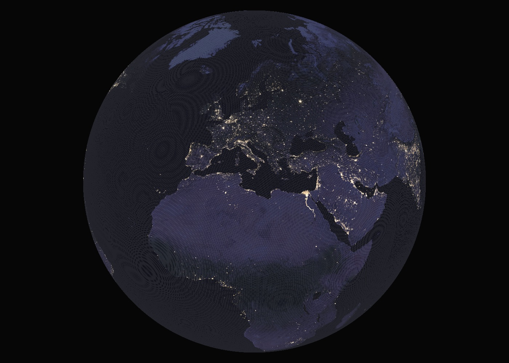
the Earth at night over Europe and Africa, drawn from the Black Marble city lights.
grissom draw --earth-only --earth "$GRISSOM_DATA/earth" \
--colourways "$GRISSOM_DATA/colourways" --earth-depth 9 --distance 4.2 \
--no-hud --look 15,35 --earth-image 1 --shot out/night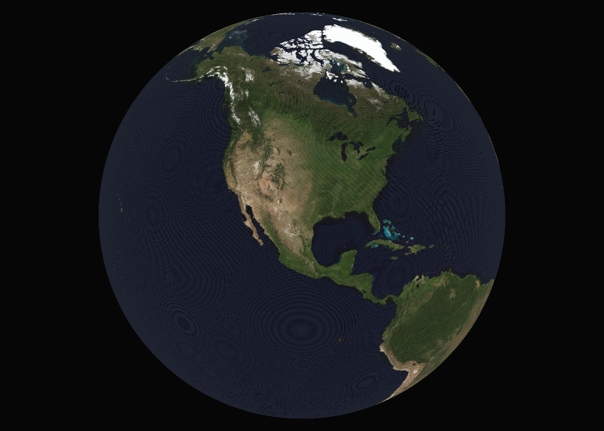
the same Earth by day, centred on North America, from the Blue Marble photograph.
grissom draw --earth-only --earth "$GRISSOM_DATA/earth" \
--colourways "$GRISSOM_DATA/colourways" --earth-depth 9 --distance 4.2 \
--no-hud --look -100,30 --shot out/day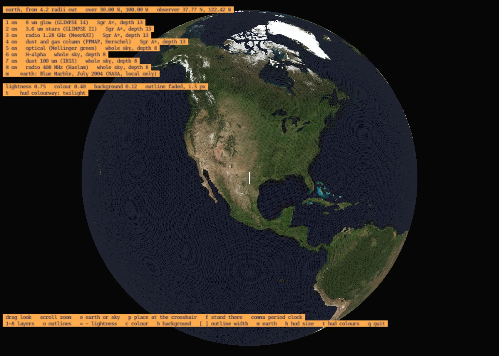
Grissom's display: the layer list, the lightness, colour and background settings, and the key help at the foot.
grissom draw --data "$GRISSOM_DATA/sgra" --earth "$GRISSOM_DATA/earth" \
--sky "$GRISSOM_DATA/sky" --colourways "$GRISSOM_DATA/colourways" \
--earth-depth 9 --distance 4.2 --view 1 --shot out/shownthe Earth turning once, 60 frames at 20 a second (7 MB). select the picture to download the film; GitHub doesn't play video in Markdown.
mkdir -p out/film
grissom film --earth-only --earth "$GRISSOM_DATA/earth" \
--colourways "$GRISSOM_DATA/colourways" --earth-depth 7 --distance 4.2 \
--no-hud --frames 60 --turns 1 --tilt 25 --into out/filmthe frames land in out/film; ffmpeg joins them into the
mp4.
the Earth imagery is NASA's Blue Marble and Black Marble, drawn by Grissom. these are pictures of the program running; the repository carries no survey imagery of its own.
you fetch your own copy of the data (about 2 GiB) with
game run grissom-data before it shows anything.
doc/grissom-setup.md walks through the layout, the fetch, and four links
the viewer still needs for older file names. $GRISSOM_DATA
above is the data root that holds sgra/,
earth/, sky/ and colourways/.
build it
it needs cgo and the macOS frameworks. the ordinary root build makes it:
CGO_ENABLED=1 game buildthat writes bin/grissom. the data comes through celestial-data,
checked out beside slayer; the setup doc has the sibling layout and the
game run grissom-data fetch.
run it
three verbs: window opens the viewer, draw
writes PNGs offscreen, film draws the earth turning, frame
by frame. flags are two dashes and whole words.
grissom --help lists them all. a first, small check, from
the setup doc:
mkdir -p out
game run grissom -- draw \
--data "$GRISSOM_DATA/sgra" --earth "$GRISSOM_DATA/earth" \
--sky "$GRISSOM_DATA/sky" --colourways "$GRISSOM_DATA/colourways" \
--depth 7 --earth-depth 4 --wide-depth 4 \
--shot "$PWD/out/check" --view -1--shot is a prefix: this writes
out/check-sky.png, out/check-earth.png and
out/check-standing.png. --dry-run lists them
and writes nothing. the same data flags with window open
the viewer.
in the window, drag to turn and scroll to scale. e
switches sky and earth, p places an observer at the
crosshair, f stands there, comma and period move the clock
an hour, 1 to 4 toggle the detail layers,
t changes the colourway, and q quits.
where to go next
- README: the map of everything.
- getting started and building slayer: the same ground as this page, kept current.
- how slayer works: scenes, tracing, the darkroom, output, and the front door.
- sets: what a set file says.
- jobs: every job key, with print and stock.
- camera motion: moves, speeds and holds.
- manufactory catalogue: the kinds slayer can make.
- modes: careful measurement and fast films.
- music: scores, voicings and the tune library.
- examples: more scenes and commands.
- package guide: what each Go package is for.
- Ferruccio and running Grissom.